library(tidyverse)
library(corrr)
library(fastDummies)
library(corrplot)
library(Metrics)10 Probeklausur Lösungsansatz
10.1 Pakete und Datenladen
library(readr)
d_train <- read_csv("d_train.csv")Rows: 205 Columns: 9
── Column specification ────────────────────────────────────────────────────────
Delimiter: ","
chr (3): species, island, sex
dbl (6): ID, bill_length_mm, bill_depth_mm, flipper_length_mm, body_mass_g, ...
ℹ Use `spec()` to retrieve the full column specification for this data.
ℹ Specify the column types or set `show_col_types = FALSE` to quiet this message.d_test <- read_csv("d_test.csv")Rows: 134 Columns: 8
── Column specification ────────────────────────────────────────────────────────
Delimiter: ","
chr (3): species, island, sex
dbl (5): ID, bill_length_mm, bill_depth_mm, flipper_length_mm, year
ℹ Use `spec()` to retrieve the full column specification for this data.
ℹ Specify the column types or set `show_col_types = FALSE` to quiet this message.View(d_train)10.2 Datenjudo
d_train %>%
summarise((across(everything(),~sum(is.na(.x)))))d_train %>%
select(body_mass_g) %>%
summarise(preis_avg=mean(body_mass_g),
preis_md = median(body_mass_g),
preis_sd = sd(body_mass_g),
preis_iqr = IQR(body_mass_g))ggplot(d_train, aes(x=body_mass_g))+
geom_histogram()`stat_bin()` using `bins = 30`. Pick better value with `binwidth`.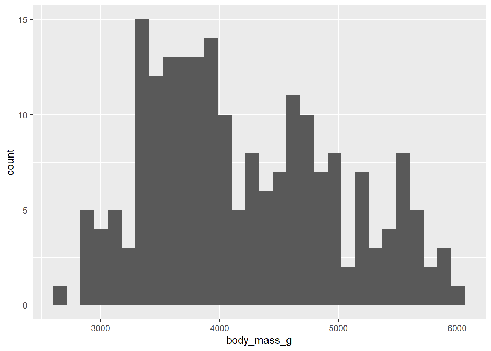
ggplot(d_train, aes(x=body_mass_g))+
geom_density()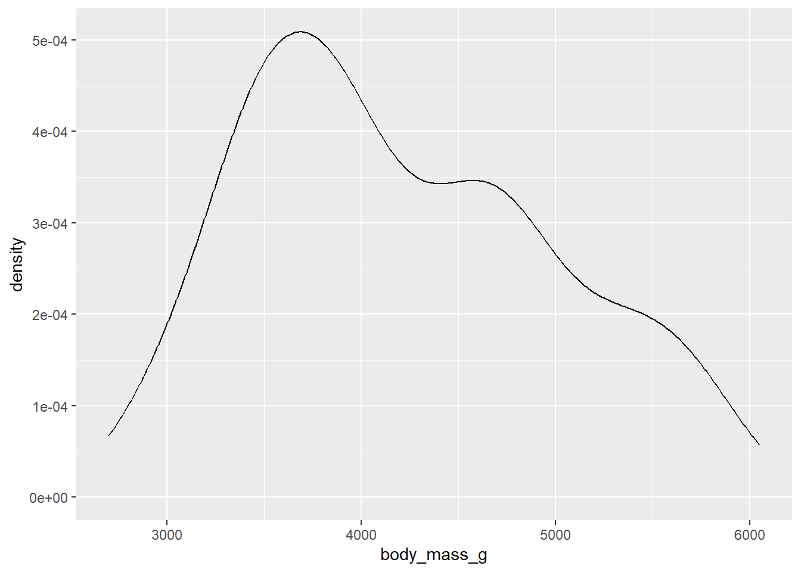
ggplot(data = d_train)+
geom_point(mapping = aes(x = body_mass_g, y = bill_length_mm))+
geom_smooth(mapping = aes(x = body_mass_g, y = bill_length_mm))`geom_smooth()` using method = 'loess' and formula = 'y ~ x'Warning: Removed 1 rows containing non-finite values (`stat_smooth()`).Warning: Removed 1 rows containing missing values (`geom_point()`).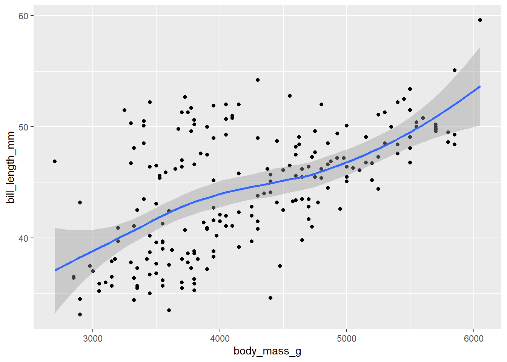
ggplot(data = d_train)+
geom_point(mapping = aes(x = body_mass_g, y = bill_depth_mm))+
geom_smooth(mapping = aes(x = body_mass_g, y = bill_depth_mm))`geom_smooth()` using method = 'loess' and formula = 'y ~ x'Warning: Removed 1 rows containing non-finite values (`stat_smooth()`).Warning: Removed 1 rows containing missing values (`geom_point()`).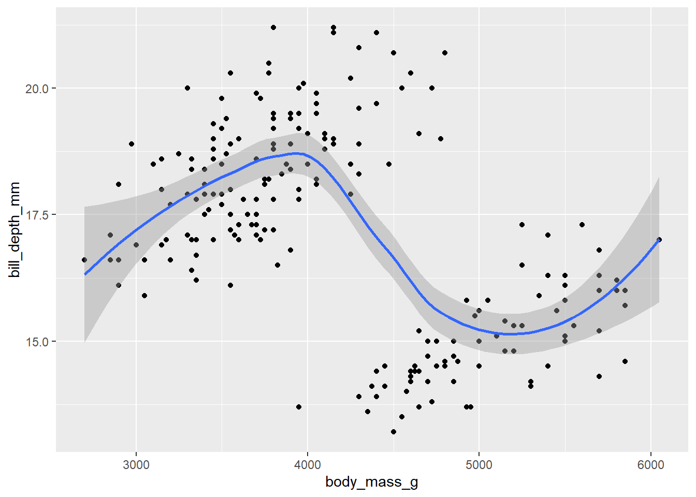
ggplot(data = d_train)+
geom_point(mapping = aes(x = body_mass_g, y = flipper_length_mm))+
geom_smooth(mapping = aes(x = body_mass_g, y = flipper_length_mm))`geom_smooth()` using method = 'loess' and formula = 'y ~ x'Warning: Removed 1 rows containing non-finite values (`stat_smooth()`).Warning: Removed 1 rows containing missing values (`geom_point()`).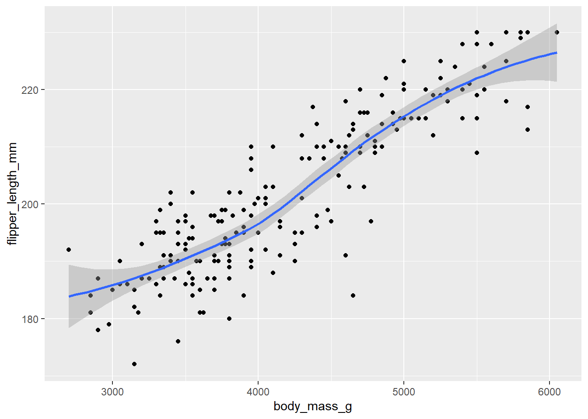
d_train %>%
mutate(across(where(is.integer), as.numeric)) %>%
select(where(is.numeric)) %>%
pivot_longer(everything(), names_to = "variable") %>%
ggplot(aes(x = value)) +
geom_histogram() +
facet_wrap(~ variable, scales = "free")`stat_bin()` using `bins = 30`. Pick better value with `binwidth`.Warning: Removed 3 rows containing non-finite values (`stat_bin()`).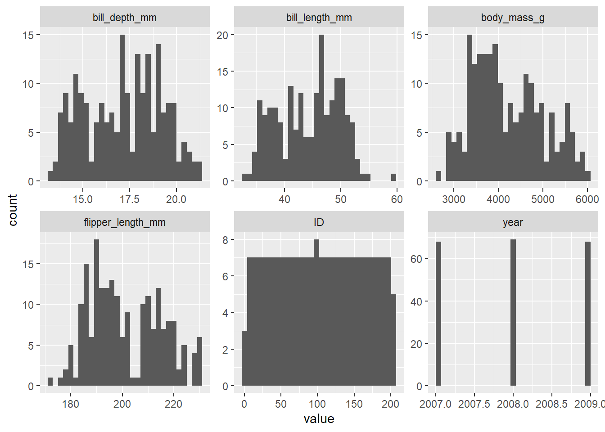
d_train %>%
sapply(class) ID species island bill_length_mm
"numeric" "character" "character" "numeric"
bill_depth_mm flipper_length_mm body_mass_g sex
"numeric" "numeric" "numeric" "character"
year
"numeric" visdat::vis_dat(d_train)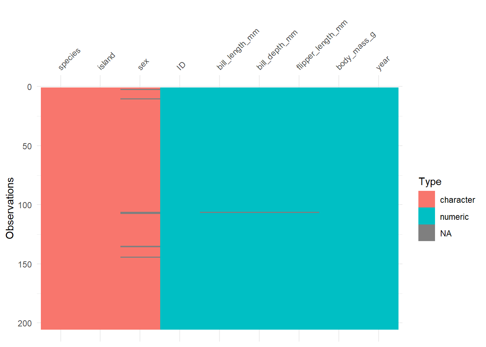
d_train %>%
select(where(is.numeric)) %>%
summarise(across(
.cols = everything(),
.fns = ~cor(.,d_train$body_mass_g, use = "complete.obs")
)) %>%
pivot_longer(everything()) %>%
arrange(-abs(value))d_train %>%
summarise(q75=quantile(body_mass_g,
prob = .75,
na.rm = TRUE),
q25=quantile(body_mass_g,
prob = .25,
na.rm = TRUE))d_train %>%
summarise(body_mass_g_iqr = IQR(body_mass_g,na.rm = TRUE))body_mass_g_grenzwerte <- c(4750 + 1.5 * 1200, 3550 - 1.5 * 1200)d_train %>%
summarise(q75=quantile(bill_length_mm,
prob = .75,
na.rm = TRUE),
q25=quantile(bill_length_mm,
prob = .25,
na.rm = TRUE))d_train %>%
summarise(bill_length_mm_iqr = IQR(bill_length_mm,na.rm = TRUE))bill_length_mm_grenzwerte <- c(48.775 + 1.5 * 9.1, 39.675 - 1.5 * 9.1)d_train %>%
summarise(q75=quantile(bill_depth_mm,
prob = .75,
na.rm = TRUE),
q25=quantile(bill_depth_mm,
prob = .25,
na.rm = TRUE))d_train %>%
summarise(bill_depth_mm_iqr = IQR(bill_depth_mm,na.rm = TRUE))bill_depth_mm_grenzwerte <- c(18.8 + 1.5 * 3.5, 15.3 - 1.5 * 3.5)d_train %>%
summarise(q75=quantile(flipper_length_mm,
prob = .75,
na.rm = TRUE),
q25=quantile(flipper_length_mm,
prob = .25,
na.rm = TRUE))d_train %>%
summarise(flipper_length_mm_iqr = IQR(flipper_length_mm,na.rm = TRUE))flipper_length_mm_grenzwerte <- c(214 + 1.5 * 24, 190 - 1.5 * 24)d_train %>%
count(bill_depth_mm > 24.1)d_train %>%
count(bill_depth_mm < 10.1)d_train %>%
count(bill_length_mm > 62.4)d_train %>%
count(bill_length_mm < 26)d_train %>%
count(body_mass_g > 6550)d_train %>%
count(body_mass_g < 1750)d_train %>%
count(flipper_length_mm > 250)d_train %>%
count(flipper_length_mm < 154)d_train %>%
summarise((across(everything(),~sum(is.na(.x)))))d_train_ohneNA <- d_train %>%
replace_na(replace = list(bill_length_mm = mean(.$bill_length_mm, na.rm = TRUE))) %>%
replace_na(replace = list(bill_depth_mm = mean(.$bill_depth_mm, na.rm = TRUE)))d_train_ohneNA <- d_train_ohneNA %>%
replace_na(list(flipper_length_mm = 0))d_train_ohneNA %>%
summarise((across(everything(),~sum(is.na(.x)))))d_train %>%
ggplot() +
aes(x = body_mass_g, y = bill_length_mm) +
geom_boxplot()Warning: Continuous x aesthetic
ℹ did you forget `aes(group = ...)`?Warning: Removed 1 rows containing non-finite values (`stat_boxplot()`).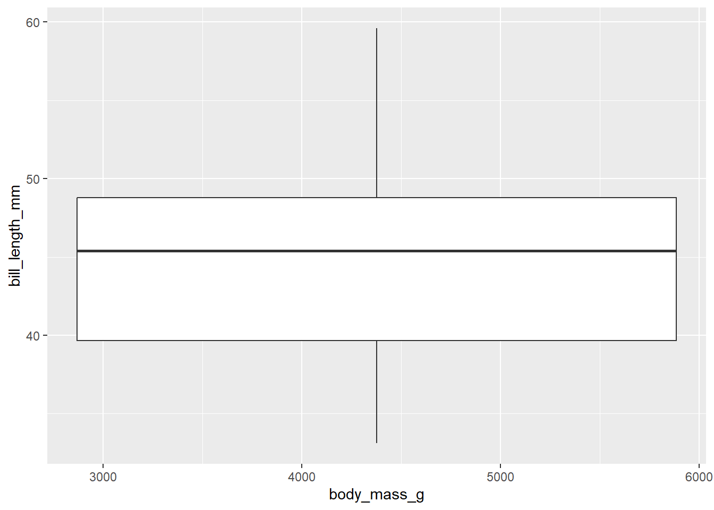
d_train %>%
ggplot() +
aes(x = body_mass_g, y = bill_depth_mm) +
geom_boxplot()Warning: Continuous x aesthetic
ℹ did you forget `aes(group = ...)`?Warning: Removed 1 rows containing non-finite values (`stat_boxplot()`).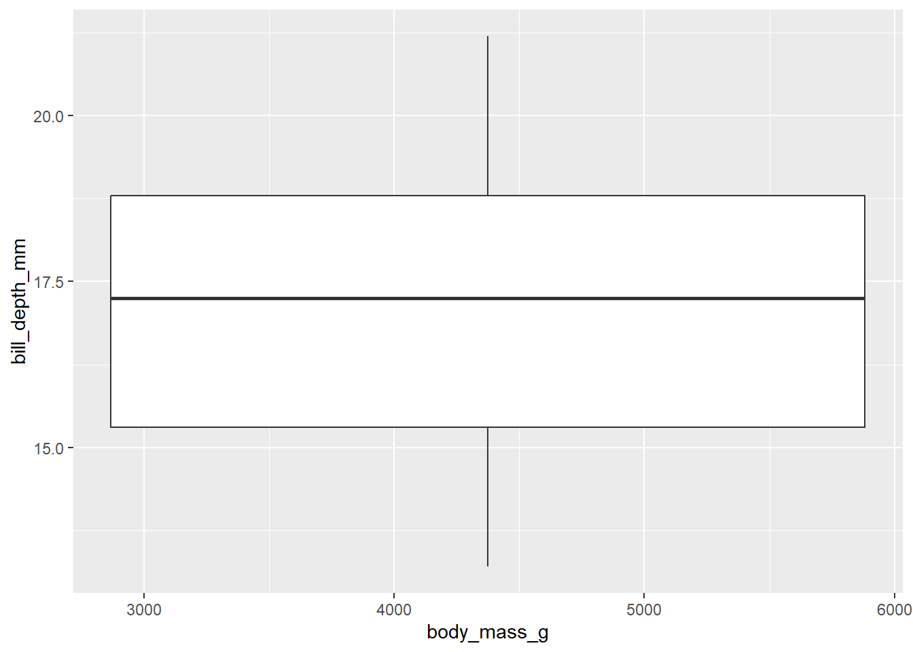
d_train %>%
ggplot() +
aes(x = body_mass_g, y = flipper_length_mm) +
geom_boxplot()Warning: Continuous x aesthetic
ℹ did you forget `aes(group = ...)`?Warning: Removed 1 rows containing non-finite values (`stat_boxplot()`).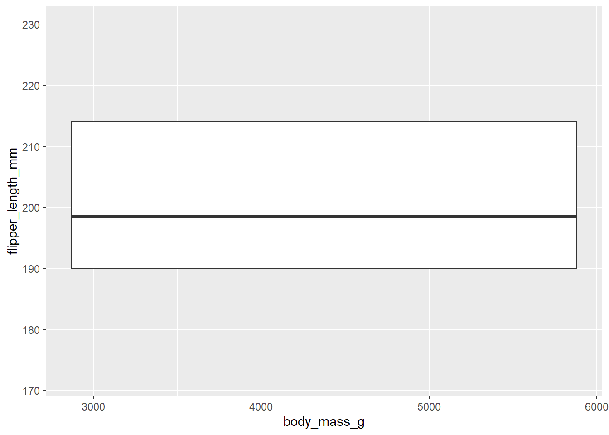
d_train %>%
ggplot() +
aes(x = body_mass_g, y = bill_length_mm) +
geom_point()Warning: Removed 1 rows containing missing values (`geom_point()`).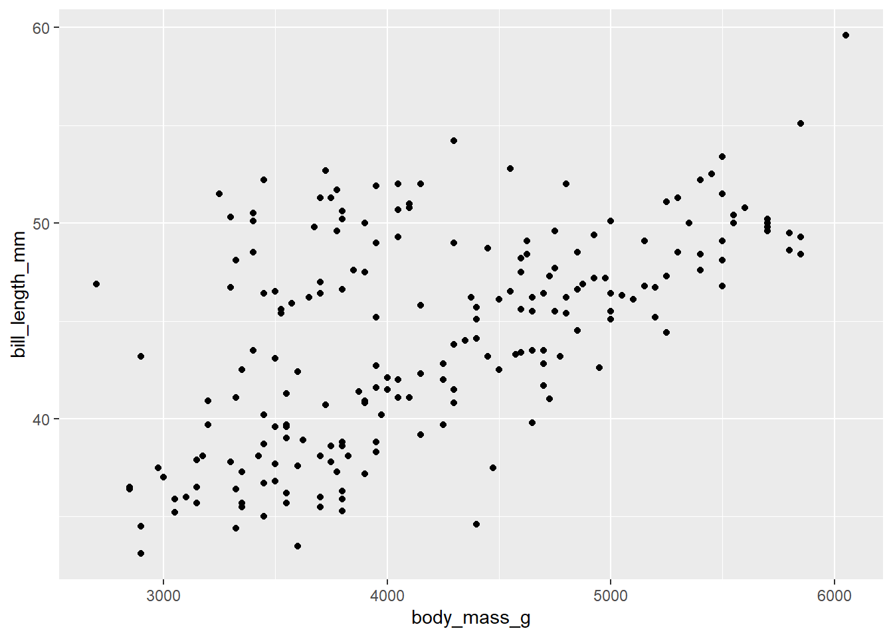
d_train %>%
ggplot() +
aes(x = body_mass_g, y = bill_depth_mm) +
geom_point()Warning: Removed 1 rows containing missing values (`geom_point()`).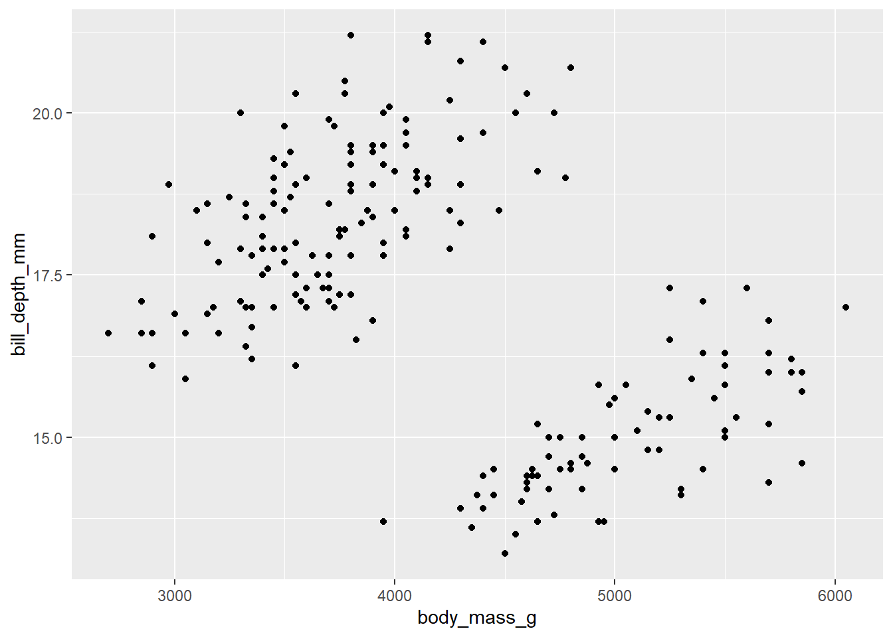
d_train %>%
ggplot() +
aes(x = body_mass_g, y = flipper_length_mm) +
geom_point()Warning: Removed 1 rows containing missing values (`geom_point()`).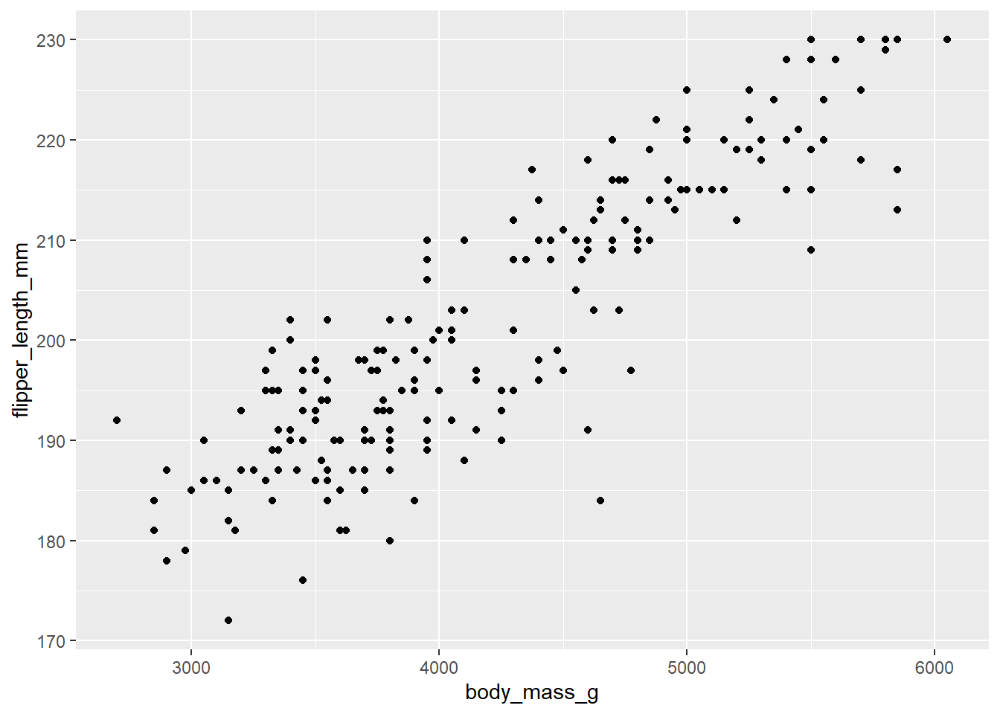
subset_cor <- subset(d_train_ohneNA, select = c(body_mass_g,bill_depth_mm, flipper_length_mm, bill_length_mm ))Korr_tab <- cor(subset_cor)
Korr_tab body_mass_g bill_depth_mm flipper_length_mm bill_length_mm
body_mass_g 1.0000000 -0.4756584 0.6163949 0.5809113
bill_depth_mm -0.4756584 1.0000000 -0.3880401 -0.2149026
flipper_length_mm 0.6163949 -0.3880401 1.0000000 0.4525609
bill_length_mm 0.5809113 -0.2149026 0.4525609 1.0000000d_train_ohneNA %>%
mutate(species = factor(species)) %>%
ggplot(aes(x= body_mass_g, y= bill_depth_mm, color = species))+
geom_point()+
geom_smooth(method = "lm")`geom_smooth()` using formula = 'y ~ x'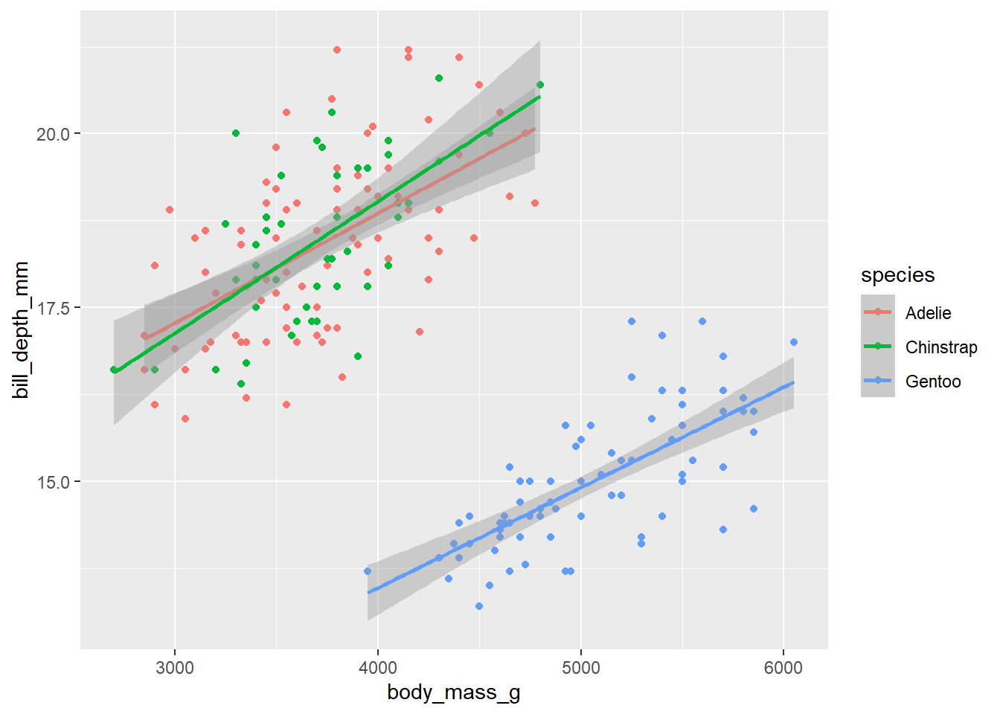
d_train_ohneNA %>%
mutate(species = factor(species)) %>%
ggplot(aes(x= body_mass_g, y= flipper_length_mm, color = species))+
geom_point()+
geom_smooth(method = "lm")`geom_smooth()` using formula = 'y ~ x'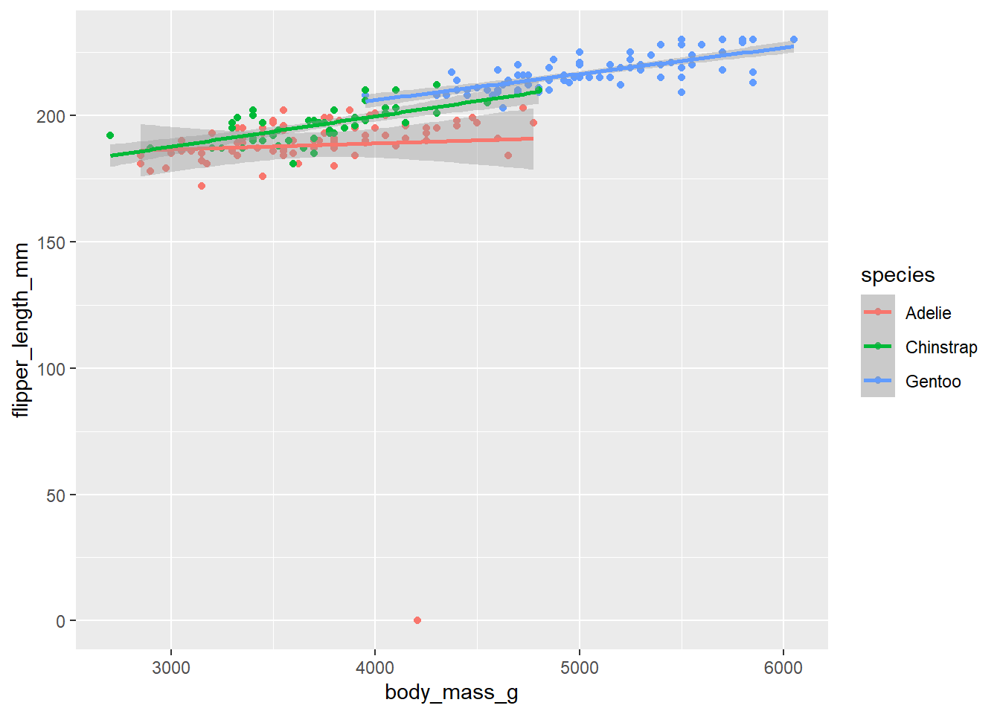
d_train_ohneNA %>%
mutate(species = factor(species)) %>%
ggplot(aes(x= body_mass_g, y= bill_length_mm, color = species))+
geom_point()+
geom_smooth(method = "lm")`geom_smooth()` using formula = 'y ~ x'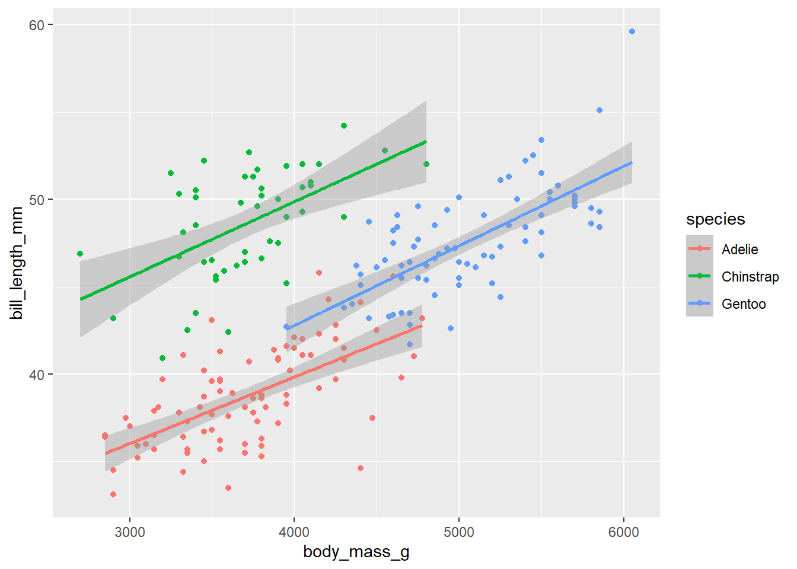
d_train_ohneNA %>%
mutate(island = factor(island)) %>%
ggplot(aes(x= body_mass_g, y= bill_depth_mm, color = island))+
geom_point()+
geom_smooth(method = "lm")`geom_smooth()` using formula = 'y ~ x'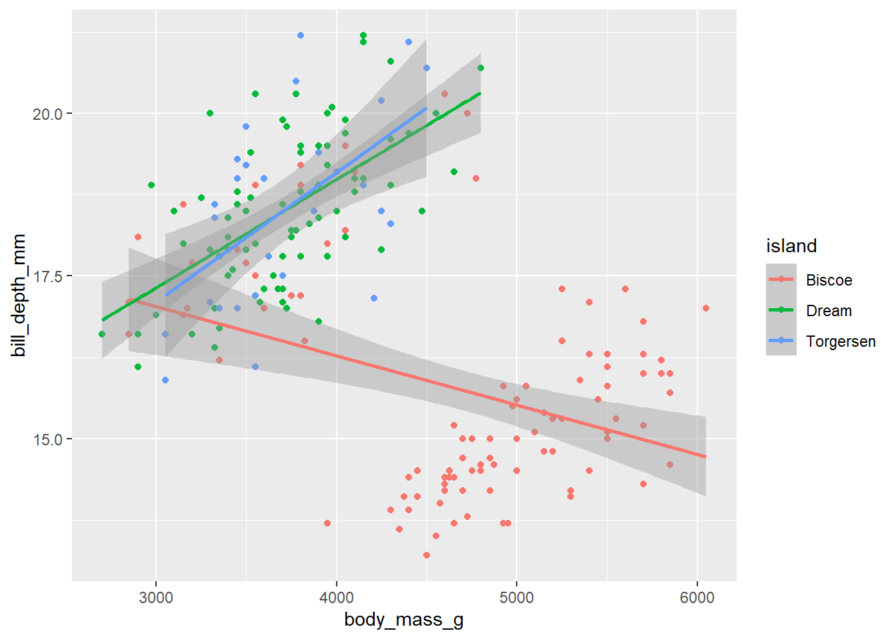
d_train_ohneNA %>%
mutate(island = factor(island)) %>%
ggplot(aes(x= body_mass_g, y= flipper_length_mm, color = island))+
geom_point()+
geom_smooth(method = "lm")`geom_smooth()` using formula = 'y ~ x'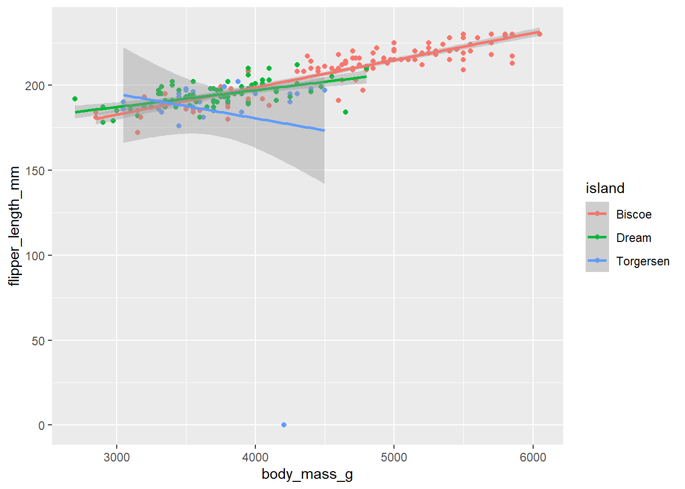
d_train_ohneNA %>%
mutate(species = factor(island)) %>%
ggplot(aes(x= body_mass_g, y= bill_length_mm, color = island))+
geom_point()+
geom_smooth(method = "lm")`geom_smooth()` using formula = 'y ~ x'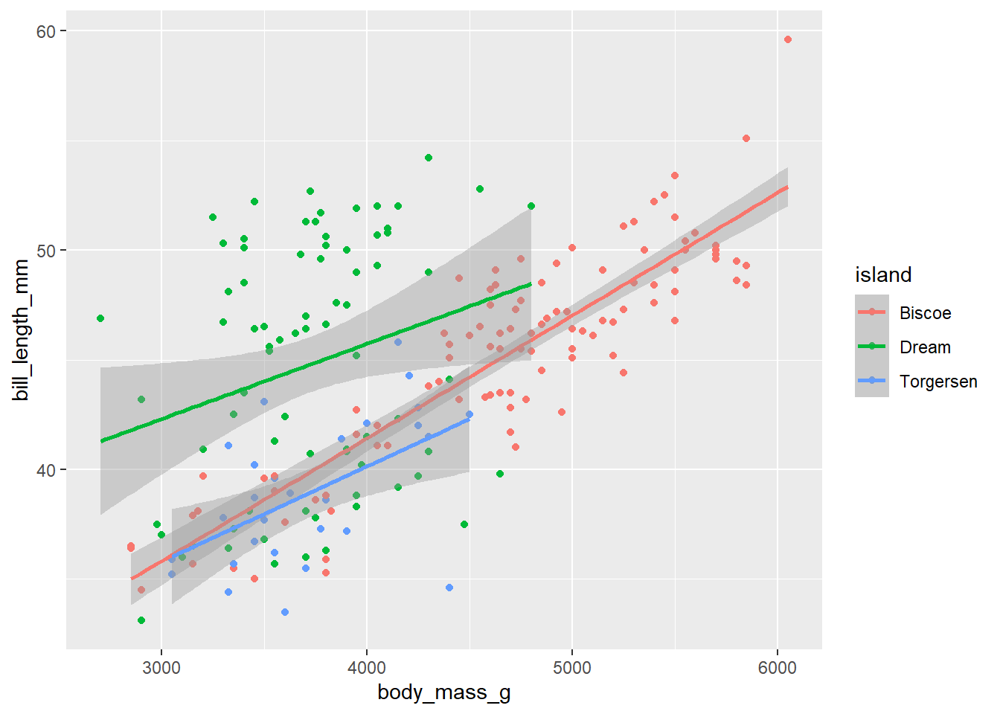
d_train_ohneNA %>%
mutate(sex = factor(sex)) %>%
ggplot(aes(x= body_mass_g, y= bill_depth_mm, color = sex))+
geom_point()+
geom_smooth(method = "lm")`geom_smooth()` using formula = 'y ~ x'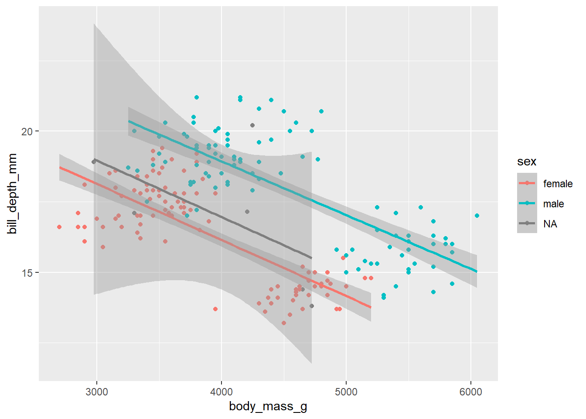
d_train_ohneNA %>%
mutate(sex = factor(sex)) %>%
ggplot(aes(x= body_mass_g, y= flipper_length_mm, color = sex))+
geom_point()+
geom_smooth(method = "lm")`geom_smooth()` using formula = 'y ~ x'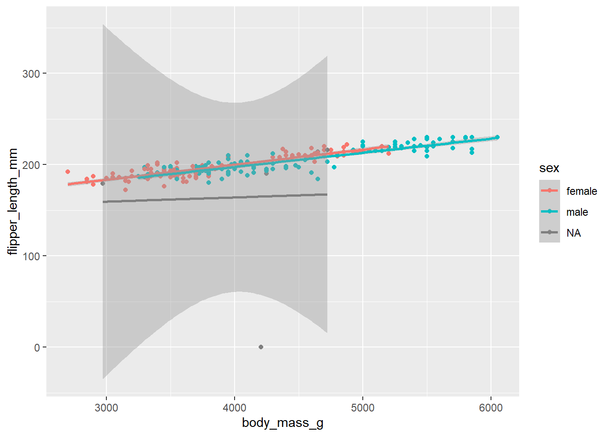
d_train_ohneNA %>%
mutate(sex = factor(sex)) %>%
ggplot(aes(x= body_mass_g, y= bill_length_mm, color = sex))+
geom_point()+
geom_smooth(method = "lm")`geom_smooth()` using formula = 'y ~ x'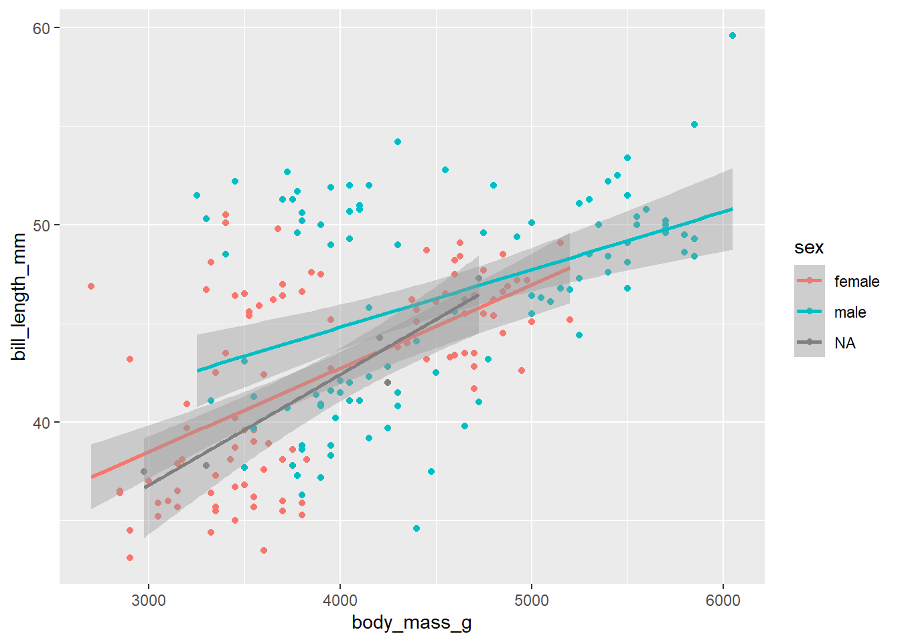
10.3 Modellierung
lm1_all_in <- lm(body_mass_g~., data = d_train_ohneNA)
summary(lm1_all_in)
Call:
lm(formula = body_mass_g ~ ., data = d_train_ohneNA)
Residuals:
Min 1Q Median 3Q Max
-497.76 -135.02 -6.11 134.88 666.28
Coefficients:
Estimate Std. Error t value Pr(>|t|)
(Intercept) 215677.757 37545.724 5.744 3.66e-08 ***
ID 7.420 0.540 13.740 < 2e-16 ***
speciesChinstrap -442.933 82.669 -5.358 2.44e-07 ***
speciesGentoo 99.016 130.592 0.758 0.44927
islandDream -93.871 55.434 -1.693 0.09204 .
islandTorgersen -66.964 56.482 -1.186 0.23728
bill_length_mm 17.172 6.678 2.571 0.01090 *
bill_depth_mm 26.326 17.634 1.493 0.13714
flipper_length_mm 12.755 2.767 4.610 7.41e-06 ***
sexmale 148.302 46.653 3.179 0.00173 **
year -107.561 18.734 -5.741 3.71e-08 ***
---
Signif. codes: 0 '***' 0.001 '**' 0.01 '*' 0.05 '.' 0.1 ' ' 1
Residual standard error: 196.5 on 188 degrees of freedom
(6 observations deleted due to missingness)
Multiple R-squared: 0.9418, Adjusted R-squared: 0.9388
F-statistic: 304.5 on 10 and 188 DF, p-value: < 2.2e-16sqrt(mean(lm1_all_in$residuals^2))[1] 190.9789lm2 <- lm(body_mass_g~species + flipper_length_mm + sex + year, data = d_train_ohneNA )
summary(lm2)
Call:
lm(formula = body_mass_g ~ species + flipper_length_mm + sex +
year, data = d_train_ohneNA)
Residuals:
Min 1Q Median 3Q Max
-702.3 -192.9 -11.0 204.2 816.0
Coefficients:
Estimate Std. Error t value Pr(>|t|)
(Intercept) 106966.975 52276.996 2.046 0.0421 *
speciesChinstrap -146.330 56.977 -2.568 0.0110 *
speciesGentoo 710.509 107.102 6.634 3.21e-10 ***
flipper_length_mm 24.205 3.699 6.544 5.26e-10 ***
sexmale 464.397 49.007 9.476 < 2e-16 ***
year -53.837 26.126 -2.061 0.0407 *
---
Signif. codes: 0 '***' 0.001 '**' 0.01 '*' 0.05 '.' 0.1 ' ' 1
Residual standard error: 286.2 on 193 degrees of freedom
(6 observations deleted due to missingness)
Multiple R-squared: 0.8733, Adjusted R-squared: 0.8701
F-statistic: 266.2 on 5 and 193 DF, p-value: < 2.2e-16sqrt(mean(lm2$residuals^2))[1] 281.842lm3 <- lm(body_mass_g~ flipper_length_mm:species + island:bill_depth_mm + island:bill_length_mm + bill_length_mm:sex +species + flipper_length_mm + sex + year, data = d_train_ohneNA)
summary(lm3)
Call:
lm(formula = body_mass_g ~ flipper_length_mm:species + island:bill_depth_mm +
island:bill_length_mm + bill_length_mm:sex + species + flipper_length_mm +
sex + year, data = d_train_ohneNA)
Residuals:
Min 1Q Median 3Q Max
-743.12 -165.80 2.24 175.77 780.22
Coefficients:
Estimate Std. Error t value Pr(>|t|)
(Intercept) 102598.089 52605.576 1.950 0.052656 .
speciesChinstrap 108.852 1545.407 0.070 0.943923
speciesGentoo -469.020 1577.469 -0.297 0.766554
flipper_length_mm 19.432 5.302 3.665 0.000323 ***
sexmale 872.246 402.545 2.167 0.031533 *
year -52.273 26.277 -1.989 0.048154 *
flipper_length_mm:speciesChinstrap -1.489 7.993 -0.186 0.852426
flipper_length_mm:speciesGentoo 4.933 7.656 0.644 0.520220
islandBiscoe:bill_depth_mm 39.366 32.310 1.218 0.224628
islandDream:bill_depth_mm 85.184 34.480 2.471 0.014400 *
islandTorgersen:bill_depth_mm 45.005 34.797 1.293 0.197508
islandBiscoe:bill_length_mm 39.792 12.993 3.062 0.002524 **
islandDream:bill_length_mm 15.422 16.737 0.921 0.358039
islandTorgersen:bill_length_mm 33.962 16.578 2.049 0.041922 *
bill_length_mm:sexmale -12.705 9.080 -1.399 0.163459
---
Signif. codes: 0 '***' 0.001 '**' 0.01 '*' 0.05 '.' 0.1 ' ' 1
Residual standard error: 277 on 184 degrees of freedom
(6 observations deleted due to missingness)
Multiple R-squared: 0.8869, Adjusted R-squared: 0.8782
F-statistic: 103 on 14 and 184 DF, p-value: < 2.2e-16sqrt(mean(lm3$residuals^2))[1] 266.3926lm4 <- lm(body_mass_g ~ flipper_length_mm + sex + island:bill_length_mm + year, data = d_train_ohneNA )
summary(lm4)
Call:
lm(formula = body_mass_g ~ flipper_length_mm + sex + island:bill_length_mm +
year, data = d_train_ohneNA)
Residuals:
Min 1Q Median 3Q Max
-768.8 -184.7 2.7 192.6 1079.4
Coefficients:
Estimate Std. Error t value Pr(>|t|)
(Intercept) 165831.813 53955.688 3.073 0.00242 **
flipper_length_mm 35.375 2.897 12.209 < 2e-16 ***
sexmale 373.106 48.119 7.754 5.09e-13 ***
year -84.349 26.900 -3.136 0.00198 **
islandBiscoe:bill_length_mm 14.589 6.484 2.250 0.02559 *
islandDream:bill_length_mm 3.646 5.891 0.619 0.53677
islandTorgersen:bill_length_mm 6.881 6.874 1.001 0.31803
---
Signif. codes: 0 '***' 0.001 '**' 0.01 '*' 0.05 '.' 0.1 ' ' 1
Residual standard error: 302.5 on 192 degrees of freedom
(6 observations deleted due to missingness)
Multiple R-squared: 0.8592, Adjusted R-squared: 0.8548
F-statistic: 195.3 on 6 and 192 DF, p-value: < 2.2e-16sqrt(mean(lm4$residuals^2))[1] 297.118lm5 <- lm(body_mass_g ~ .+flipper_length_mm:species + island:bill_depth_mm + island:bill_length_mm + bill_length_mm:sex, data = d_train_ohneNA )
summary(lm5)
Call:
lm(formula = body_mass_g ~ . + flipper_length_mm:species + island:bill_depth_mm +
island:bill_length_mm + bill_length_mm:sex, data = d_train_ohneNA)
Residuals:
Min 1Q Median 3Q Max
-548.03 -110.28 9.74 105.87 655.87
Coefficients:
Estimate Std. Error t value Pr(>|t|)
(Intercept) 2.244e+05 3.583e+04 6.263 2.67e-09 ***
ID 7.537e+00 5.164e-01 14.597 < 2e-16 ***
speciesChinstrap 2.685e+02 1.069e+03 0.251 0.802016
speciesGentoo 4.427e+02 1.174e+03 0.377 0.706417
islandDream 2.271e+03 6.069e+02 3.743 0.000244 ***
islandTorgersen 2.602e+03 7.904e+02 3.292 0.001194 **
bill_length_mm 3.488e+01 9.044e+00 3.857 0.000159 ***
bill_depth_mm 6.687e+01 2.612e+01 2.559 0.011300 *
flipper_length_mm 1.266e+01 3.591e+00 3.527 0.000532 ***
sexmale 2.192e+02 2.836e+02 0.773 0.440441
year -1.126e+02 1.791e+01 -6.287 2.35e-09 ***
speciesChinstrap:flipper_length_mm -2.326e+00 5.559e+00 -0.418 0.676155
speciesGentoo:flipper_length_mm -1.780e+00 5.584e+00 -0.319 0.750250
islandDream:bill_depth_mm -4.055e+01 3.473e+01 -1.167 0.244550
islandTorgersen:bill_depth_mm -7.696e+01 3.760e+01 -2.047 0.042098 *
islandDream:bill_length_mm -4.246e+01 1.302e+01 -3.262 0.001322 **
islandTorgersen:bill_length_mm -3.271e+01 1.426e+01 -2.294 0.022961 *
bill_length_mm:sexmale -1.485e+00 6.349e+00 -0.234 0.815364
---
Signif. codes: 0 '***' 0.001 '**' 0.01 '*' 0.05 '.' 0.1 ' ' 1
Residual standard error: 183.4 on 181 degrees of freedom
(6 observations deleted due to missingness)
Multiple R-squared: 0.9512, Adjusted R-squared: 0.9466
F-statistic: 207.5 on 17 and 181 DF, p-value: < 2.2e-16sqrt(mean(lm5$residuals^2))[1] 174.9401lm6 <- lm(body_mass_g ~ species + island + bill_length_mm + bill_depth_mm + flipper_length_mm + sex + year + species:flipper_length_mm + island:bill_depth_mm + island:bill_length_mm + bill_length_mm:sex, data = d_train_ohneNA)
summary(lm6)
Call:
lm(formula = body_mass_g ~ species + island + bill_length_mm +
bill_depth_mm + flipper_length_mm + sex + year + species:flipper_length_mm +
island:bill_depth_mm + island:bill_length_mm + bill_length_mm:sex,
data = d_train_ohneNA)
Residuals:
Min 1Q Median 3Q Max
-693.23 -164.70 4.26 168.33 789.05
Coefficients:
Estimate Std. Error t value Pr(>|t|)
(Intercept) 129567.602 51852.791 2.499 0.01335 *
speciesChinstrap -698.016 1570.314 -0.445 0.65720
speciesGentoo 2115.001 1718.533 1.231 0.22002
islandDream 2633.265 892.266 2.951 0.00358 **
islandTorgersen 3324.224 1160.785 2.864 0.00468 **
bill_length_mm 52.471 13.190 3.978 0.00010 ***
bill_depth_mm 111.849 38.173 2.930 0.00382 **
flipper_length_mm 21.082 5.215 4.043 7.79e-05 ***
sexmale 1038.174 409.010 2.538 0.01198 *
year -66.761 25.948 -2.573 0.01088 *
speciesChinstrap:flipper_length_mm 2.959 8.162 0.363 0.71739
speciesGentoo:flipper_length_mm -6.595 8.203 -0.804 0.42249
islandDream:bill_depth_mm -58.793 51.077 -1.151 0.25121
islandTorgersen:bill_depth_mm -117.569 55.170 -2.131 0.03443 *
islandDream:bill_length_mm -43.172 19.154 -2.254 0.02539 *
islandTorgersen:bill_length_mm -33.477 20.985 -1.595 0.11238
bill_length_mm:sexmale -16.387 9.221 -1.777 0.07721 .
---
Signif. codes: 0 '***' 0.001 '**' 0.01 '*' 0.05 '.' 0.1 ' ' 1
Residual standard error: 269.9 on 182 degrees of freedom
(6 observations deleted due to missingness)
Multiple R-squared: 0.8938, Adjusted R-squared: 0.8844
F-statistic: 95.7 on 16 and 182 DF, p-value: < 2.2e-16sqrt(mean(lm6$residuals^2))[1] 258.128910.4 Nützliche Links
Linear Regression Summary in R